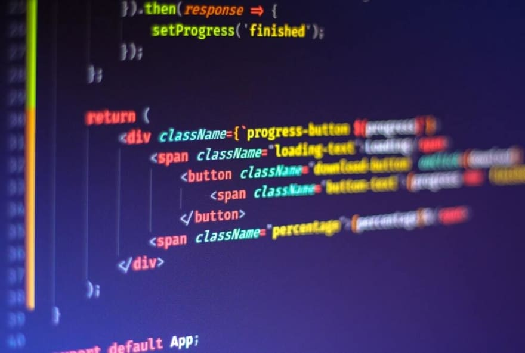

Pakistan Single Window (PSW) is an ICT-based National Single Window (NSW) system in Pakistan. My role as UX Engineer included several responsibilities & problems, which over time, I kept solving
Defined and improved PSW's design language.
Problem
To create a design language that not only stands out but it is also accessible and relatable.
Solution
I conducted multiple stakeholder meetings to ideate on the brand and the product design direction.
Impact
The activities resulted in a recognizable brand and a design language used to convey complex ideas about the product's functions.
View Project on Behance
Making the stakeholder meetings more intuitive

Problem
Very low-fidelity wireframes were shown (if any) to the stakeholders during the analysis and evaluation phase, due to which we couldn't get any insights and feedback on our direction.
Solution
I introduced high-fidelity functional prototypes that were close to real-life systems, as well as created a prototype toolkit for business analysis to quickly ideate and show prototypes.
Impact
The functional prototypes made the stakeholder meetings more engaging, which resulted in high qualitative feedback. Eventually, we used these prototypes internally as well to demonstrate various functionality.
Making the ideation and creation process efficient

Problem
It took lots of effort and time to generate ideas and product designs, making the process slower.
Solution
I introduced a modular design system that allowed reusability and customizability at various stages.
Impact
The design system made a huge impact on the timelines (approx 40%), and the whole process became much more efficient.
View Case Study
Improved design to develop handover process
Problem
The design handover process at the end of the design phase was confusing, resulting in an inaccurate reflection of the design into an actual product.
Solution
I worked with the front-end team to help convert the design tokens into reusable code, creating a complete front-end code structure that reflected our design system accurately.
Impact
This made it easier for the dev team to quickly use the design tokens and understand the delivered design better.